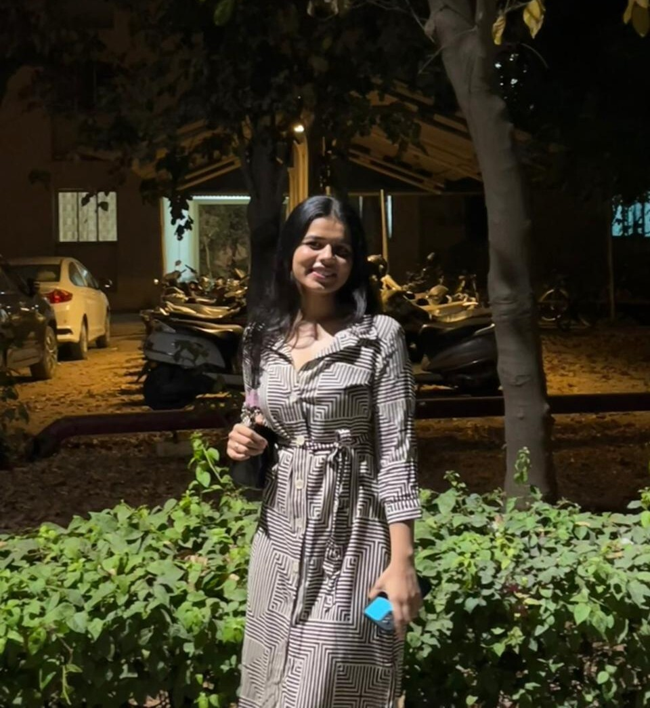

M.Sc. Data Science - DA-IICT, Gandhinagar
Statistics gave me the language. Data Science gave me the canvas. I build things that make patterns visible and decisions easier.

I started with Statistics - not because someone told me to, but because I genuinely wanted to understand why things happen the way they do. Three years at MS University Baroda gave me the foundations: probability theory, regression, time series, the patience to sit with data until it tells you something true.
Then came DA-IICT, Gandhinagar - and everything accelerated. Machine learning, NLP, causal inference, big data. But more than the coursework, it was the projects: forex intelligence platforms, defence analytics, an AI copilot for worker rights, logistics dashboards that got picked up for pilot evaluation. Real problems, real data, real stakes.
I have also cleared AFCAT and CDS written examinations and made it to SSB selection - which, alongside being School Captain at Jawahar Navodaya Vidyalaya, taught me more about working under pressure and leading without authority than any classroom could. A stint volunteering at a Vadodara NGO - supporting 50+ families through data coordination - gave those skills a human context I haven't forgotten.
I build things, I ask questions, and I laugh a lot. That combination, I've found, makes for good data science.
Some things don't fit neatly into a resume. Here's what actually makes me, me.
I'm looking for Data Analyst, Business Analyst, and Data Scientist roles. If you're working on problems that involve real data and real decisions, I'd love to hear about them. No formalities needed.